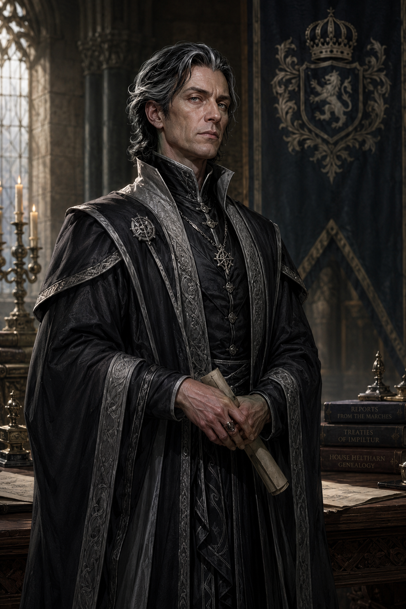
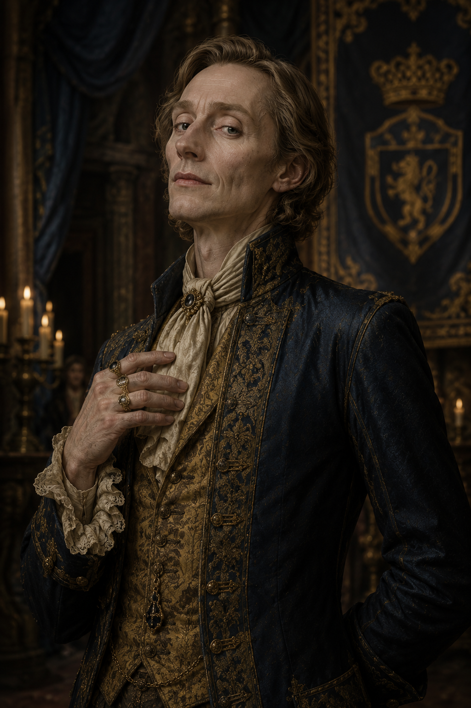
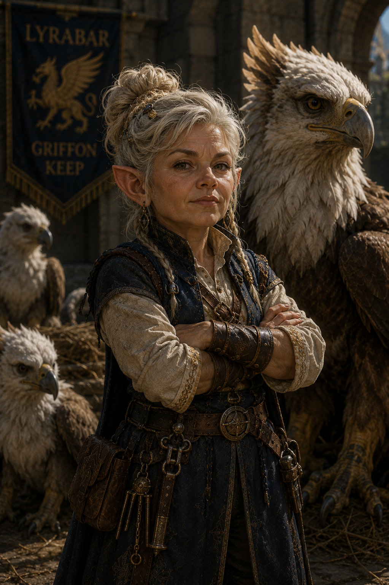
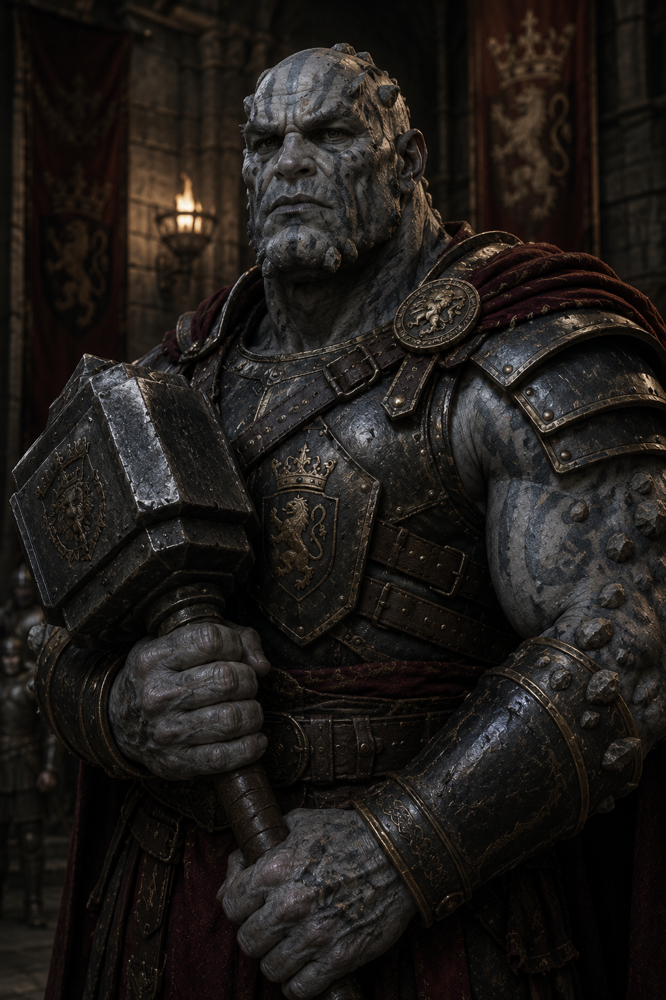
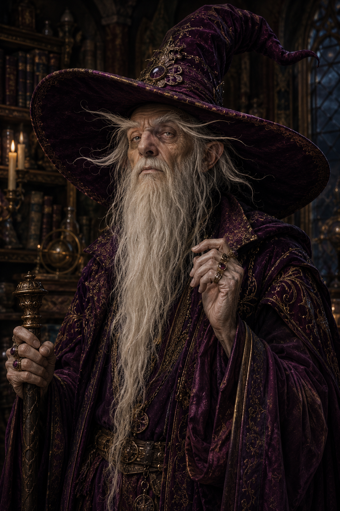
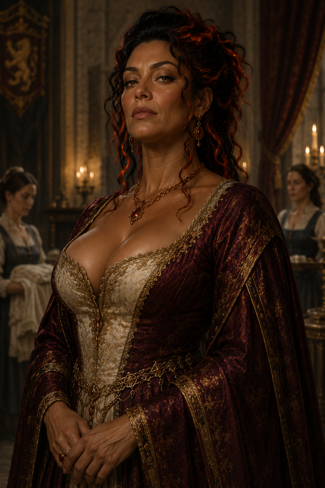
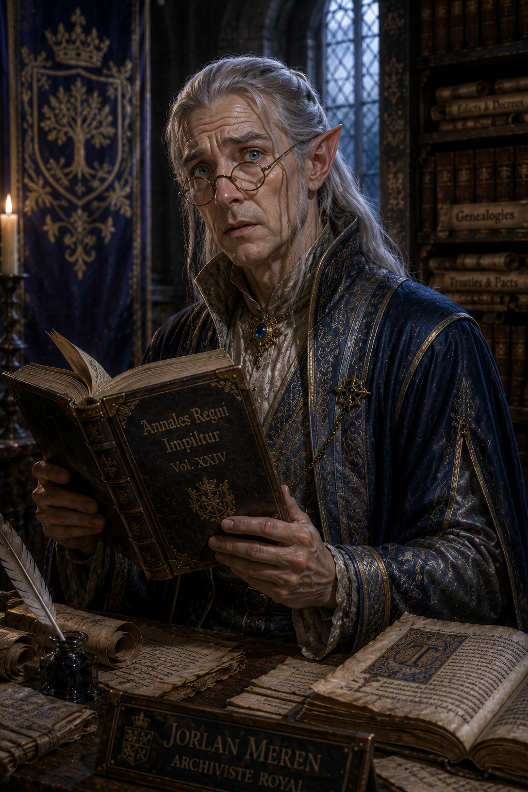
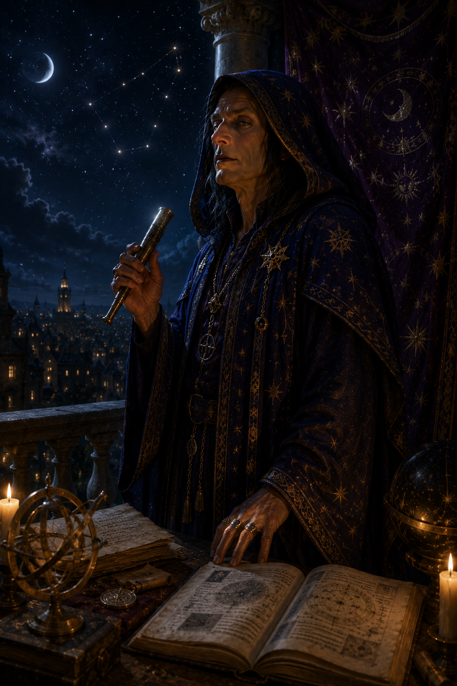
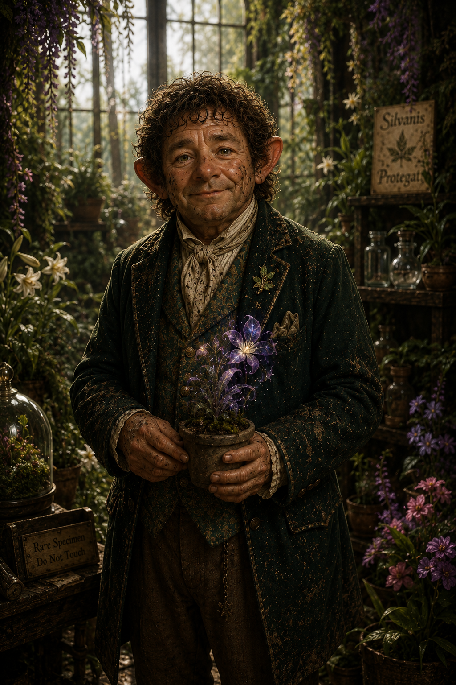

King Alric is a ruler shaped as much by the sea-beaten cliffs of Lyrabar as by the life he lived before the crown. Once an adventurer himself, he carries the quiet authority of someone who has survived the world rather than merely governed it. Age has not softened him so much as refined him; his presence is measured, his words deliberate, and his gaze still sharp enough to weigh truth from deception. Even seated upon a gilded throne within the stone-hewn Citadel of the Stalwart King, he feels less like a man confined by ceremony and more like a veteran commander who has simply changed battlefields. The fortress around him—carved into the living rock of the cliffside—mirrors his own nature: enduring, pragmatic, and unyielding against forces that would erode weaker foundations.
As a king, Alric rules with a philosophy forged in hardship and companionship rather than inherited privilege. He trusts deeds over titles, experience over birthright, and understands leadership as something earned repeatedly rather than granted once. This is why he places such weight on his son’s trials, seeing the throne not as an inheritance to be protected, but a burden to be proven worthy of. His willingness to send Prince Edric into danger is not cruelty, but conviction—an extension of his belief that a ruler must be tempered by the same world they will one day shape. Yet beneath this severity lies a restrained care: he does not seek his son’s destruction, but his transformation. Alric’s judgment is firm, but not indifferent; he is a man who loves his kingdom enough to test even what he holds most dear, trusting that true strength is revealed only when comfort is stripped away.
The only child of King Alric - Prince Edric was tall for his age but lacked the strength to fill out his frame, his shoulders narrow and his limbs still bearing the gangly awkwardness of youth. His golden hair, meant to resemble the noble locks of his father, fell in unruly waves that he often tossed back with exaggerated flair. His face, though fair and sharp-featured, held none of the hard-earned wisdom of warriors or rulers—only the restless impatience of a boy desperate to prove himself, but who had dwelt largely in the protection of the Citadel of the Stalwart King.
He carried himself with the overconfidence of someone who had never truly been tested, his boasting words a thin veil for inexperience. “I’ve trained with the finest swordsmen in the kingdom,” he would declare, gripping the hilt of his pristine blade as if its mere presence made him formidable. Yet his stance betrayed him—too rigid, too rehearsed, the motions of a boy who had spent more time drilling in castle courtyards than facing real danger. Some whispered that he was weak, that he lacked the steel to one day claim the throne. Others, kinder souls, simply said he was too young—that time and hardship might yet shape him into something greater.

Valis Visconti was born into a minor noble family of Impiltur and distinguished himself early through intellect rather than swordsmanship or political lineage. Possessing a remarkable memory and a talent for seeing consequences before others recognized them, he quickly rose through the administrative ranks of the royal court. During the turbulent years before King Alric Heltharn ascended the throne, Valis became a trusted confidants and advisor. While Alric earned glory through adventure and battle, Valis quietly learned the art of governance, diplomacy, and statecraft. By the time Alric claimed the crown, Valis had become indispensable, eventually earning the title of Chancellor and serving as the king's principal advisor. Throughout his decades of service he developed a reputation for calm judgment and a willingness to make difficult decisions for the good of the realm, regardless of how unpopular they might be.
Valis’s son Vichenzo Visconti, who spent much of his childhood within the royal court alongside Prince Edric. The two boys grew up together amid tutors, knights, courtiers, and visiting dignitaries, forming a friendship that often blurred the distinction between noble son and heir to the throne. As Vichenzo entered adolescence, however, he began displaying extraordinary gifts for sorcery. Recognizing both the promise and danger of such talent, Valis arranged for him to study under Ultheera Windmere, one of King Alric’s legendary adventuring companions and among the most respected spellcasters in Impiltur. Though the decision separated father and son for long periods, Valis believed there was no finer mentor in the realm.
When the great earthquake of 1502 DR shattered the countryside, Valis has become convinced that the earthquake may mark the beginning of a series of calamities that may threaten not only the throne, but the entire kingdom. As a result, Valis has become increasingly determined to prepare Prince Edric for the trials he believes lie ahead. To many courtiers he appears cold and calculating, but those who know him well understand that nearly every decision he makes is driven by a desire to protect the people and institutions entrusted to his care. With King Alric aging, Prince Edric untested, and ominous signs across Impiltur, Chancellor Valis Visconti finds himself carrying burdens heavier than any he has borne before—while quietly fearing that even his carefully laid plans may not be enough for what is coming.

Master Olaris Goldtune was never simply part of Impiltur’s court—he was part of its atmosphere. A bard of refined reputation and questionable sincerity, he drifted through noble gatherings like a well-played chord lingering after the final note of a song. His appearance was meticulously maintained: tailored coats in muted golds and deep blues, polished rings that caught candlelight at just the right angles, and a perpetual half-smile that suggested he was always listening to something slightly more interesting than the person in front of him. Olaris spoke with a smooth, deliberate cadence, his wit landing gently but precisely, often leaving courtiers unsure whether they had been complimented or cleverly insulted. He rarely raised his voice; he didn’t need to. People leaned in anyway.
Beneath the charm and carefully curated reputation, Olaris functioned as an unofficial ledger of the court’s hidden indiscretions. He knew which alliances were built on lies, which marriages were held together by convenience rather than affection, and which noble houses were one rumor away from collapse. His motivation was simple on the surface: secure patronage, favor, and access to ever more prestigious stages across Faerûn. Yet the true engine of his influence was information—collected patiently, traded carefully, and never entirely given away. Those who sought his help in matters of deception or performance often found him invaluable, but those who asked the wrong questions sometimes realized too late that Olaris already knew far more about them than they were comfortable admitting.

Master Kells was a female gnome whose small stature did absolutely nothing to diminish the authority she carried through the royal stables of the Citadel of the Stalwart King. Compact, broad-shouldered, and perpetually smelling faintly of hay, leather oil, and feathers, Rhana possessed the weathered confidence of someone far more comfortable around dangerous animals than noble courtiers. Her silver-blonde hair was usually tied into practical braids to keep it clear of snapping beaks and kicking hooves, and her sharp hazel eyes seemed capable of calming a frightened griffon hatchling or intimidating an unruly stable hand with equal effectiveness. Though stern, blunt, and notoriously impatient with aristocrats who treated animals like ornaments, Rhana displayed remarkable gentleness toward the creatures under her care, speaking to horses, ponies, and griffons alike in low reassuring murmurs that often seemed to work better than formal training methods. For years she had overseen the royal stables and aviaries, tirelessly advocating for the crown to recognize griffons not merely as exotic beasts or cavalry mounts, but as intelligent and fiercely loyal guardians capable of defending the palace itself. Many within the court dismissed her ideas as impractical eccentricity, though few dared say so in front of her after witnessing how obediently even full-grown griffons responded to her commands. Unknown to nearly everyone, Rhana’s absolute favorite griffon—a striking silver-feathered creature named Brimblewing—was not entirely natural at all, but secretly touched by Feywild blood, something Rhana guarded with near-parental protectiveness out of fear the creature would otherwise be taken from her or exploited by ambitious nobles and mages.

Sir Krumm, Captain of the Guard, was less a man than a moving fortress of stone and iron. Standing well over seven feet tall, the goliath carried the immense weight of his body with unsettling ease. His skin resembled weathered granite streaked with ash-gray and dark brown patterns that spread across his shoulders and scalp like cracks through mountain rock, while thick lithoderms jutted from his brow, forearms, and collarbones like naturally formed armor plates. Krumm’s face was severe even by goliath standards: broad-jawed, heavy-browed, and marked by old scars that cut through the natural mottling of his skin. Everything about him conveyed restraint—measured footsteps, stillness before violence, and the quiet patience of someone entirely confident in his own strength. He wore practical plate armor scarred from years of service, its surface battered but meticulously maintained
What truly made Sir Krumm unforgettable, however, was the weapon he carried: a broad-headed maul with a surprisingly short handle, as though forged for a giant who preferred fighting in cramped corridors. In Krumm’s hands it moved with terrifying speed and precision. Witnesses claimed he could shatter shields, cave in armor, or break charging warhorses with single blows, all without losing balance or composure. Among the soldiers under his command he was respected with near-religious loyalty, not because he inspired affection, but because he never demanded of others what he would not endure himself. He stood watch through freezing nights beside common guardsmen. Sir Krumm was the kind of protector who made danger think twice before entering the city walls at all.

High Court Mage Pevirill Thrice-Bound had long ago reached the peculiar age where even the royal court could no longer remember precisely how old he truly was. Some claimed he had advised three kings; others swore he had once argued magical theory with sages now centuries dead. Pevirill himself answered such questions differently each time he was asked, usually while distracted by something entirely unrelated. His body had withered into a narrow, crooked frame wrapped in layers of rich plum-colored robes embroidered with faded constellations and arcane sigils. Yet despite his frailty, there remained something unnervingly sharp behind his pale, watery eyes, as though age had merely stripped away distractions and left only intellect behind. A long beard spilled nearly to his knees in tangled silver-white strands, merging at times with equally absurd eyebrows that drooped so far outward they often obscured his peripheral vision. Wisps of ear hair curled from beneath his enormous pointed wizard hat—a ridiculous, oversized thing of velvet plum with an exaggerated brim broad enough to cast half his face into shadow. The hat itself seemed less like clothing and more like a territorial creature perched atop his skull.
Pevirill’s eccentricities were the subject of endless gossip throughout the court. He carried pockets full of dried herbs, dead beetles, candle stubs, and cryptic notes written in his own nearly unreadable shorthand, frequently forgetting where he had placed important magical instruments while flawlessly recalling obscure prophecies from centuries prior. Conversations with him often wandered unpredictably through philosophy, weather patterns, ancient curses, and complaints about soup before circling back to the original topic with startling precision. Though absentminded in appearance, Pevirill possessed terrifying magical ability when roused, capable of reducing arrogant nobles to silence with a motion or unraveling dangerous enchantments with casual muttering beneath his beard. He seemed utterly indifferent to status, treating kings, servants, and foreign dignitaries with equal absent-minded impatience. Yet for all his strange habits and theatrical appearance, even the most cynical courtiers understood one thing clearly: Pevirill Thrice-Bound had survived far too long, and learned far too much, for anyone sensible to mistake him for a harmless old fool.

Mistress Enntesera Spark served the royal household with the sort of exacting discipline usually reserved for military commanders and high priests. As Mistress of the Robes, she oversaw nearly every domestic function within the king’s private residence: laundering ceremonial garments, organizing servants and attendants, coordinating kitchens, preparing royal chambers, and ensuring that every meal, feast, and formal gathering unfolded with flawless precision. Though technically beneath the nobles in rank, Enntesera wielded immense practical authority within the palace walls, for even dukes and ambassadors quickly learned that offending her often resulted in mysteriously delayed accommodations or disastrously incorrect seating arrangements at court dinners. She was a striking woman, tall and richly curvaceous, carrying herself with a poised confidence that made even armored knights balk. Her partial fire-genasi blood revealed itself subtly but unmistakably—warm copper-toned skin, amber eyes that seemed almost ember-lit in candlelight, and thick dark hair threaded naturally with streaks of deep crimson. Even in moments of stress, there always lingered the faint scent of clove smoke and heated spice around her.
Despite her beauty and commanding presence, Enntesera tolerated no foolishness concerning her duties. Court protocol was, to her mind, a sacred structure, and she enforced it with terrifying attention to detail. She could recite seating hierarchies from memory, identify foreign dignitaries by the cut of their sleeves alone, and notice a missing silver goblet from across an entire banquet hall without breaking conversation. Servants under her supervision feared disappointing her far more than they feared punishment from nobles, not because she was cruel, but because her standards bordered on impossible. Yet beneath that stern professionalism lay fierce loyalty toward the household staff she commanded. Enntesera protected kitchen workers, maids, laundresses, and attendants with the same intensity a general might defend soldiers under their command, often shielding them from the arrogance and abuses of wealthy courtiers. Those who truly knew Enntesera Spark understood that her devotion came not from ambition or vanity, but from an almost unshakable belief that order, dignity, and care were the invisible foundations upon which kingdoms survived.

Royal Archivist Arvonce Glimmerlight had served the royal archives of Lyrabar for so long that many within the court quietly joked the citadel itself would sooner crumble into the sea than the elf retire from his post. A high elf of refined bearing and perpetually anxious expression, Arvonce carried the unmistakable air of a man burdened by the weight of too much knowledge and too little sleep. His silver-white hair, carefully tied back despite constant disarray from frantic study, framed sharp features softened only slightly by age and exhaustion, while his pale blue eyes perpetually darted toward loose documents, half-finished annotations, or improperly shelved histories as though disorder itself offended him personally. Though stuffy, formal, and easily flustered in conversation, Arvonce possessed one of the most formidable historical minds in Impiltur, with a memory spanning centuries of dynasties, wars, treaties, and bloodlines that predated even the current royal succession. He had served kings, princes, and advisors across generations, preserving records through fires, invasions, and political upheaval with near-religious devotion to historical truth. Nobles often dismissed him as little more than an eccentric scholar buried beneath dust and parchment, yet within the archives his authority was absolute; few dared challenge his expertise regarding royal genealogy, ancient heraldry, or the sprawling tapestries lining the halls of the Citadel of the Stalwart King. In recent months, however, those closest to him had noticed a growing unease beneath his scholarly composure, as though some newly uncovered truth hidden deep within the kingdom’s oldest records had shaken even Arvonce Meren’s faith in history remaining safely buried.

Court Astrologer Veylan Starwhisper was a half-elf whose very presence seemed to unsettle the natural rhythm of conversation, as though he occupied only part of the same world as everyone around him. Tall and unnervingly thin beneath layers of midnight-blue robes embroidered with fading constellations, Veylan moved with slow, deliberate grace, often appearing silently upon balconies, shadowed corridors, or observatories long before anyone noticed him there. His angular features bore the sharp elegance of elven blood softened by the weary age of humanity, while his pale silver eyes carried the distant, distracted look of a man perpetually studying things others could neither see nor comprehend. He spoke in quiet, cryptic fragments—half prophecy, half observation—and possessed a maddening habit of answering direct questions with obscure references to stars, tides, eclipses, or forgotten omens. Though many at court dismissed him as eccentric, even the king’s advisors treated him with cautious respect, for Veylan’s predictions had proven disturbingly accurate too many times to ignore. He claimed that fate moved like celestial mechanics, with kingdoms, rulers, and souls all bound to patterns written long before their births, and he devoted his life to charting those invisible currents. In recent months, however, his behavior had grown increasingly troubled; servants whispered of sleepless nights spent staring into the heavens, frantic calculations scattered across his observatory, and muttered warnings about a “seventh shadow” approaching from beyond the stars. Most unsettling man.

Royal Gardener Elnir Mossroot was a halfling who looked perpetually uncomfortable whenever forced into formal society, as though noble banquets and polished marble halls were unfortunate obstacles standing between him and a perfectly good patch of soil. Short even by halfling standards and perpetually dusted with flecks of dirt despite every servant’s best efforts, Elnir possessed the weathered hands, sun-browned skin, and soft-spoken patience of a man who trusted plants far more than people. His curly brown hair rarely obeyed attempts at grooming, and his awkward formal clothing—usually strained by forgotten gardening tools stuffed into pockets where handkerchiefs ought to be—gave the impression that someone had dragged him away from a greenhouse moments before an important ceremony. Yet beneath the humble exterior lay one of the most knowledgeable horticulturists in Impiltur, entrusted with the care of the royal gardens, medicinal herbs, and a collection of exotic flora gathered from across Faerûn and beyond. Elnir spoke to plants as though they were old friends, tended rare blossoms with almost parental devotion, and believed deeply that living things flourished best when treated with gentleness rather than control. Though many nobles viewed him as an eccentric groundskeeper with dirt beneath his nails and little understanding of politics, a few observant individuals noticed that certain plants within the royal conservatory did not resemble anything native to the mortal world at all. Hidden carefully among the legal specimens, Elnir secretly nurtured a forbidden Feywild plant whose strange beauty and subtle magical influence fascinated him beyond reason, despite the lack of common sense it took to do so.